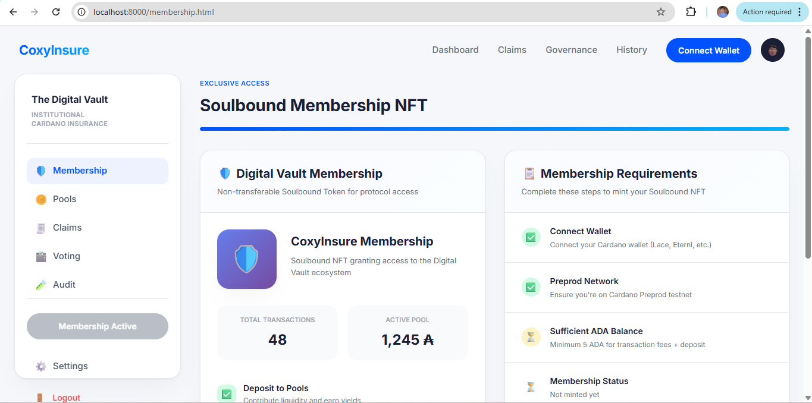

CoxyInsure User Help Documentation.
4. Membership and Identity
CoxyInsure uses a membership identity layer to gate protected actions such as pool participation, claims governance, and other trusted protocol actions. Membership acts both as an access token and as a trust signal inside the dApp.
4.1 Why Membership Matters
- It verifies that the user has completed the protocol’s required onboarding step.
- It unlocks protected features that should not be available to anonymous visitors.
- It provides a clear visual status badge in the user interface.
4.2 Minting Membership
- Open the Membership page from the side navigation.
- Review the explanatory banner and requirements.
- Click the mint button.
- Approve the wallet transaction.
- Wait for confirmation and refresh the page if the status badge does not update immediately.
4.3 Membership Status Indicators
Verified: you can access protected sections and proceed to liquidity or governance actions.
Not minted: the dApp may show a membership-required banner or hide certain controls.
Admin review: admin pages can monitor registered users and their purchased covers, but users still need their own identity state to unlock protected actions.
